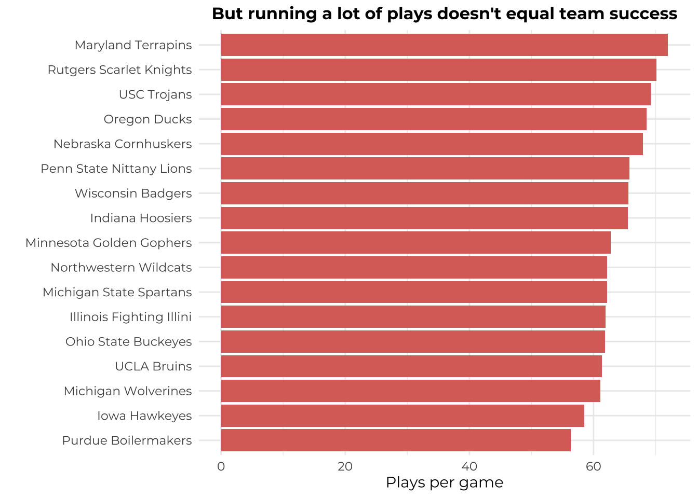

Few other sports have quite the differences in style of play of college football. Different regions of the country sprouted different blue prints of offense. The sport is often defined by wacky, high-speed spread offenses or teams that seem not be aware the forward pass exists (talking about you Iowa!).
Here, we’re going to look at one very specific (or well, not so specific these days) region of college football: The Big Ten.
These days, with the league stretching from coast to coast, there are many different stylistic and strategic choices made in building an offense. No longer is the Big Ten just a grind-it-out, physical, running league. Well, okay not Iowa again, but point stands.
Because there are so many styles and speeds of offense, does it matter how many plays you run in a game? Does running a lot of plays mean you are a good team? Let’s use the data to find out.
Code
library(tidyverse)
── Attaching core tidyverse packages ──────────────────────── tidyverse 2.0.0 ──
✔ dplyr 1.1.4 ✔ readr 2.1.5
✔ forcats 1.0.0 ✔ stringr 1.5.1
✔ ggplot2 3.5.1 ✔ tibble 3.2.1
✔ lubridate 1.9.3 ✔ tidyr 1.3.1
✔ purrr 1.1.0
── Conflicts ────────────────────────────────────────── tidyverse_conflicts() ──
✖ dplyr::filter() masks stats::filter()
✖ dplyr::lag() masks stats::lag()
ℹ Use the conflicted package (<http://conflicted.r-lib.org/>) to force all conflicts to become errors
Rows: 1717 Columns: 79
── Column specification ────────────────────────────────────────────────────────
Delimiter: ","
chr (11): Location, Opponent, Result, OT, Bowl.x, TeamURL, Outcome, Bowl.y,...
dbl (64): Rk, Gtm, Points, PointsOpp, PassCmp, PassAtt, PassPct, PassYds, P...
lgl (3): Score, TeamScore, OpponentScore
date (1): Date
ℹ Use `spec()` to retrieve the full column specification for this data.
ℹ Specify the column types or set `show_col_types = FALSE` to quiet this message.
Rows: 711 Columns: 77
── Column specification ────────────────────────────────────────────────────────
Delimiter: ","
chr (9): Location, Opponent, Result, OT, TeamURL, Outcome, Team, Conferenc...
dbl (64): Rk, Gtm, Points, PointsOpp, PassCmp, PassAtt, PassPct, PassYds, P...
lgl (3): Score, TeamScore, OpponentScore
date (1): Date
ℹ Use `spec()` to retrieve the full column specification for this data.
ℹ Specify the column types or set `show_col_types = FALSE` to quiet this message.
We’re going to look at this in a few time frames. First, we’ll look at the 2024 season alone, then 2025 (so far) alone and then lastly, a combined chart.
We’ll have to look at this two ways each year. First total plays for the season and then try to standardize it for average per game since not every team played the same number of games.
Code
b1g2024plays |>ggplot(aes(x =reorder(TeamFull, totalplays), y = totalplays, fill = TeamFull)) +coord_flip() +geom_col(fill ="#db7069") +labs(title ="Teams with deep playoff runs ran the most total plays. That makes sense!",x ="",y ="Total Plays") +theme_minimal() +theme(plot.title =element_text(size =9.5, face ="bold", hjust =0.5, family ="montserrat"),axis.text =element_text(family ="montserrat"),axis.title =element_text(family ="montserrat"))
Code
b1g2024plays |>ggplot(aes(x =reorder(TeamFull, avgplays), y = avgplays, fill = TeamFull)) +coord_flip() +geom_col(fill ="#db7069") +labs(title ="But running a lot of plays doesn't equal team success",x ="",y ="Plays per game") +theme_minimal() +theme(plot.title =element_text(size =12, face ="bold", hjust =0.5, family ="montserrat"),axis.text =element_text(family ="montserrat"), axis.title =element_text(family ="montserrat"))

It shouldn’t come as much of a surprise to see Ohio State, Penn State and Oregon at the top of the total plays list. Those three played the most games. Ohio State won the national championship. Penn State made the national semifinals. Oregon played in the Big Ten title game and the Rose Bowl. So that doesn’t mean much.
What’s more interesting? Rutgers is the next team up after those three. Rutgers did play in a bowl game last year, but went just 7-6. The averages will tell us a better story.
When we look at what teams averaged the most plays, it’s a lot of mediocre teams at the top of the chart. Rutgers, Maryland and USC had the top three most plays per game. Those three teams combined to go 18-20 in 2024. Maryland won just won Big Ten game — against USC, ironically. So running a lot of plays didn’t necessarily mean a team was winning a lot of games based on 2024 data. The teams that were more successful (we’ll use the Big Ten teams that made the Playoff for the sake of this: Ohio State, Penn State, Oregon, Indiana) are scattered throughout this list. Ohio State had the fifth fewest plays of all Big Ten teams, and won the national championship.
What we see here is that it’s not about the quantity of plays, but about executing each team’s respective style of play.
Does that change in 2025?
Code
b1g2025plays |>ggplot(aes(x =reorder(TeamFull, totalplays), y = totalplays, fill = TeamFull)) +coord_flip() +geom_col(fill ="#db7069") +labs(title ="Total Plays by Big Ten Teams in 2025",x ="",y ="Total Plays") +theme_minimal() +theme(plot.title =element_text(size =12, face ="bold", hjust =0.5, family ="montserrat"),axis.text =element_text(family ="montserrat"), axis.title =element_text(family ="montserrat"))
Code
b1g2025plays |>ggplot(aes(x =reorder(TeamFull, avgplays), y = avgplays, fill = TeamFull)) +coord_flip() +geom_col(fill ="#db7069") +labs(title ="Ohio State runs the fewest plays per game, and is the nation's best team",x ="",y ="Plays per game") +theme_minimal() +theme(plot.title =element_text(size =12, face ="bold", hjust =0.5, family ="montserrat"),axis.text =element_text(family ="montserrat"),axis.title =element_text(family ="montserrat"))
The total sum of plays is going to hold a bit more weight here because the season is ongoing in 2025 and teams have generally played the same number of games to this ponit in mid-October. Here, we see a mix of good and not so good teams here. Again, emphasizing our understanding that a quantity of plays doesn’t say much about a team other than just how it likes to play. Same thing goes for the average plays per game chart.
In both total plays and per game average, Ohio State is last in the Big Ten. Ohio State is also undefeated and the No. 1 team in the country. Seems like being slow isn’t slowing them down.
Which teams made the biggest changes from 2024 to 2025? Let’s visualize that.
Code
combinedplays_long <- combinedplays |>select(TeamFull, totalplays2024, totalplays2025) |>pivot_longer(cols =starts_with("totalplays"),names_to ="Year",values_to ="TotalPlays" ) |>mutate(Year =recode(Year,"totalplays2024"="2024","totalplays2025"="2025"))ggplot(combinedplays_long, aes(x =reorder(TeamFull, TotalPlays), y = TotalPlays, fill = Year)) +coord_flip() +geom_col(position ="stack") +labs(title ="Big Ten Team Total Plays: 2024 vs 2025",x ="",y ="Total Plays",fill ="Season" ) +theme_minimal() +theme(plot.title =element_text(size =12, face ="bold", family ="montserrat"),axis.text =element_text(family ="montserrat"), axis.title =element_text(family ="montserrat")) +scale_fill_manual(values =c("2024"="#db7069", "2025"="#2b6cb0" ))
Code
combinedplays |>group_by(TeamFull) |>summarize(pct_change = ((avgplays2025 - avgplays2024) / avgplays2024) *100) |>arrange(desc(pct_change)) |>ggplot(aes(x =reorder(TeamFull, pct_change), y = pct_change, fill = TeamFull)) +coord_flip() +geom_col() +labs(title ="With a new coach, Purdue had the biggest jump in average plays per game this year.",x ="",y ="Percent Change in Plays per Game") +theme_minimal() +theme(plot.title =element_text(size =9, face ="bold", family ="montserrat"),axis.text =element_text(family ="montserrat"), axis.title =element_text(family ="montserrat"), legend.position ="none") +scale_fill_manual(values =c("Purdue Boilermakers"="#647D4BFF", "Iowa Hawkeyes"="#647D4BFF","Indiana Hoosiers"="#647D4BFF","Northwestern Wildcats"="#647D4BFF","Michigan Wolverines"="#647D4BFF","Rutgers Scarlet Knights"="#647D4BFF","Minnesota Golden Gophers"="#647D4BFF","Michigan State Spartans"="#647D4BFF","UCLA Bruins"="#647D4BFF","Nebraska Cornhuskers"="#647D4BFF", "Oregon Ducks"="#db7069", "Illinois Fighting Illini"="#db7069","Ohio State Buckeyes"="#db7069","Penn State Nittany Lions"="#db7069","Wisconsin Badgers"="#db7069","USC Trojans"="#db7069","Maryland Terrapins"="#db7069" ))
Purdue saw a jump of more than 20% in its average plays run per game from 2024 to 2025. What changed? A new a head coach. Purdue fired Ryan Walters after the 2024 season and hired Barry Odom. And while Purdue has at least outwardly appeared improved this year, notably hanging with Notre Dame for a bit, the Boilermakers are still just 2-4 and 0-3 in the Big Ten.
The style changed, but the result hasn’t yet. Which gets at another factor the plays data can’t show us: Purdue and other teams at the bottom of the Big Ten just aren’t talented enough.
It’s also worth noting that Iowa, IOWA!!!!, had the second largest increase in plays per game and yet……. they still aren’t good on offense! It’s at least a concerted effort to shift the narrative around what has been one of the nation’s most futile offenses, but the results have still been largely the same despite the higher speed of play.
On the flip side, Maryland has seen the largest decrease in plays per game, and is improved over last season, approaching bowl eligibility.
High tempo offenses are often described as better offesnes in the media because they tend to create more highlights and score a lot of points. But running a lot of plays is clearly not a strong metric of deciding if an offense is good.
If you run 100 plays or three plays, what matters is that you score points. Scoring points wins football games. It doesn’t matter how you do it. A team’s efficiency and execution on offense within the sphere of their own scheme is a better determination of what makes a good team.